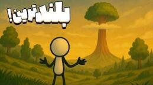

اگر درختی به بلندی اورست وجود داشت چه میشد؟

فرض کن داری در یک جنگل قدم میزنی. نه یک جنگل معمولی. جایی که وقتی سرت را بالا میگیری آسمان دیده نمیشود. نه به خاطر ابر، نه پرنده، نه حتی مه. به خاطر یک درخت. درختی که تمومی ندارد. هرچه سرت را بالا ببری هنوز ادامه دارد، تا جایی که گردنت درد میگیرد ولی هنوز نصفش را ندیدهای. یکهو یک سؤال عجیب توی سرت میپرد: صبر کن ببینم، این یک درخت است یا کوه اورست که پوستش سبز است؟
حالا فرض کن چنین درختی واقعاً وجود داشت. درختی به ارتفاع ۸۸۴۸ متر، درست اندازهٔ قلهٔ اورست. این غول سبز چقدر آب میخورد؟ تنش چقدر باید کلفت باشد که وا نرود؟ چند سال باید عمر کند تا برسد آنجا بالا؟ میخواهیم دقیق حساب کنیم که اگر درختی در حد اورست قد میکشید، واقعاً چه میشد.
بلندترین درخت واقعی
قبل از اینکه با کله بپریم توی ماجرای درخت اورستیمان، یک لحظه وایسا. بیا یک نگاه به رکورددار دنیای واقعی بیندازیم. بلندترین درختی که تا حالا روی زمین پیدا شده هایپریون است. این درخت واقعی است، در پارک ملی ردwood کالیفرنیا رشد کرده و قدش حدود ۱۱۵ متر و ۸۵ سانتیمتر است. از مجسمهٔ آزادی هم بلندتر است. این غول برگدار به اندازهٔ یک ساختمان ۳۵ طبقه سر به فلک کشیده.
حالا فرض کن زیرش ایستادهای. سایهاش همهجا را گرفته. شاخههای پایینیاش خودشان به اندازهٔ یک درخت مستقلاند و تاج آنقدر بالاست که در مه و ابر گم میشود. جالب این است که این پسر خوشقد بالای طبیعت تازه حدود ۶۰۰ تا ۸۰۰ سال دارد. در دنیای درختها هنوز جوان حساب میشود و هنوز هم دارد رشد میکند.
ولی خب ۱۱۵ متر کجا و ۸۸۴۸ متر کجا؟ درخت اورستی ما باید حدود ۷۷ برابر بلندتر از هایپریون باشد.
چرا درخت از یک جایی بالاتر نمیرود؟
سؤال اصلی این است که چه چیزی جلوی هایپریون را گرفته. درخت مثل ما محدودیت دارد. آب لازم دارد، غذا میخواهد، باید نفس بکشد و از همه مهمتر باید بتواند خودش را سر پا نگه دارد.
اصلیترین مشکل موقع قد کشیدن، آبرسانی است. درخت باید آب را از خاک بکشد بالا و برساند به نوک برگها. این کار با آوندهای چوبی انجام میشود. آوند را مثل یک نی خیلی باریک تصور کن که از ریشه تا نوک درخت کشیده شده. وقتی آب از سطح برگ تبخیر میشود، یک مکش درست میکند که آب را از ریشه بالا میکشد. دانشمندها به این میگویند چسبندگی-کشش، یا کوهیژن-تنشن. اسمش باکلاس است ولی مفهومش ساده است: تبخیر از برگ میکشد و ستون آب داخل آوند مثل نخ به هم چسبیده.
اما این نخ آبی جاهایی کم میآورد. وقتی درخت خیلی بلند میشود، نیروی مکش دیگر زورش نمیرسد. ستون آب میشکند؛ نه با قیچی، با تشکیل حباب هوا وسطش. به این میگویند آمبولی. البته نه آن آمبولی بدن انسان، ولی به همان معنی انسداد. آب دیگر به برگهای بالایی نمیرسد. برگها تشنه میمانند، روزنهها را میبندند، فتوسنتز متوقف میشود و درخت میگوید خب تا همینجا کافی است، دیگر رشد نمیکنم. گیاهشناسها میگویند سقف رشد یک درخت حدود ۱۳۰ متر است. در شرایط معمولی هیچ درختی بیشتر از این قد نمیکشد، چون دیگر نمیتواند آب برساند بالا.
مشکل بزرگ دیگر وزن خود درخت است. هرچه بلندتر شود، چوب و برگ بیشتری را باید بالا نگه دارد. پایین تنه باید وزن کل را تحمل کند و چوب، با تمام زور و قدرتش، یک حد تحمل دارد. حسابها نشان میدهند اگر درختی بخواهد تا اورست بکشد، فشار وزن خودش در قسمتهای پایین میتواند به حدی برسد که چوب له شود یا ترک بردارد. یعنی خودش، خودش را نابود میکند.
از آن بدتر باد است. هرچه بلندتر، بیشتر در چشم باد. درختی که ۸۰۰۰ متر قد دارد عملاً یک تیر برقگیر غولپیکر است که با هر تندباد ممکن است بشکند یا ریشهکن شود.
اگر بخواهیم قانون را دور بزند
تا اینجا طبیعت طوری طراحی شده که نگذارد درختها زیادی قد بکشند. هنوز نگفتیم چه تغییری لازم است تا درختی به بلندای اورست برسد. اصلاً از نظر علمی ممکن است؟ ما هم سرمان درد میکند برای محالات. میخواهیم درختی بسازیم که این قانونها را دور بزند.
اول باید یک فکر اساسی برای آب بکنیم. شاید این درخت بتواند از مه، رطوبت ابر و حتی هوای خیس آب بیرون بکشد. درختهای واقعی مثل ردwood این کار را بلدند. در صبحهای مهآلود، برگهای بالاییشان آب مه را مستقیم جذب میکنند. حتی گاهی شیره از بالا به پایین میرود. آره، جریان برعکس میشود. پس شاید تاج درخت اورستی ما ابرهایی را که از آن رد میشوند بدوشد و بریزد توی سیستم داخلیاش. شاید در هر ارتفاعی یک ایستگاه جذب آب داشته باشد: در ۲۰۰۰ متر برگ جذبکنندهٔ مه، در ۵۰۰۰ متر ساختاری اسفنجی که ابر را میمکد، و همینجور تا خود تاج. اینطوری دیگر لازم نیست همهٔ آب را از زمین بکشد بالا.
مشکل بعدی استحکام است. چوب معمولی؟ نه عزیز دلم، کم است. اینجا به یک جور ابرچوب نیاز داریم. مثلاً چیزی شبیه نانولولهٔ کربنی در دیوارهٔ سلولها، یا یک فیبر طبیعی فوقالعاده سفت که در برابر وزن و باد و فشار اخم هم نکند. بعضی گیاهها در ساقهشان سیلیس دارند، همان شیشه. اگر چنین درختی وجود داشت، شاید داخل چوبش الیافی شبیه کربن طبیعی میداشت. یک ستون چوبی که زورش به خودش برسد.
ولی تنه چه؟ اگر صاف و باریک باشد، یک باد میاندازدش. پس پایین تنه باید مثل یک کوه باشد. پهن، سنگین، پر از ریشههای قوی. درختهای بزرگ جنگل بارانی ریشههای پهنی دارند به اسم باترس. درخت ما شاید باترسهایی به ارتفاع ۱۰۰ متر داشته باشد که اطرافش پخش شدهاند، مثل چنگالهای یک هیولا که زمین را گرفته.
این درخت نمیتواند تاج پهن داشته باشد، چون هرچه برگ و شاخه بیشتر باشد، در برابر باد آسیبپذیرتر است. نوک باید تیز باشد، چیزی شبیه مخروط موشک. شاخهها آنقدر انعطافپذیر که با باد خم شوند ولی نشکنند. حتی ممکن است پوستش رسانای برق باشد تا موقع صاعقه جریان را رد کند و نسوزد. یک جور برقگیر طبیعی.
چقدر آب و چند سال؟
چنین درختی باید جایی رشد کند که همهچیز فراهم باشد: آب زیاد، خاک محکم، هوای مرطوب، بدون باد سهمگین. شاید بهترین جا یک ساحل همیشه مهآلود باشد که خاک مقاومی هم داشته باشد.
فرض کنیم محدودیتها را دور زده. چقدر آب لازم دارد؟ یک بلوط بزرگ در روزهای گرم ممکن است حدود ۳۸۰ لیتر آب در روز مصرف کند. درخت سکویا، مخصوصاً آن غولهای ردwood، روزانه صدها لیتر و گاهی تا چند هزار لیتر بالا میکشند. با اجازهتان، یک تریلی آب در روز میخورند.
حالا درخت اورستی را تصور کن. اگر سرانگشتی حساب کنیم، ممکن است روزانه حدود ۵۰ هزار گالن آب لازم داشته باشد، یعنی نزدیک ۱۸۰ هزار لیتر. یک استخر شنای المپیک حدود ۲٫۵ میلیون لیتر آب دارد. اگر این درخت هر روز به همین روند آب بخورد، در کمتر از دو هفته یک استخر المپیک را خشک میکند. برای اینکه خشک نشود، یک سیستم ریشهای هیولاوار لازم است که نه فقط از زمین، از همهٔ اطراف آب بمکد. شاید آنقدر تبخیر کند که عصر بالای سرش ابر درست شود و شب همان ابر باران شود و دوباره بخوردش. یک جور چرخهٔ خصوصی آب برای یک درخت.
حتی اگر آب حل شود، چقدر طول میکشد به این ارتفاع برسد؟ هایپریون حدود ۸۰۰ سال عمر دارد و تازه رسیده به ۱۱۵ متر. درخت ۸۸۴۸ متری حدود ۷۷ برابر بلندتر است. ۸۰۰ سال ضرب در ۷۷ میشود حدود ۶۱ هزار سال. اگر همهچیز خوب پیش برود و رشد یکنواخت باشد، که نیست، باید بیش از ۶۰ هزار سال زمان بگذارد. و این برای درختی است که هیچ مشکلی پیش نیاید: نه آفت، نه خشکسالی، نه آتشسوزی، نه تغییر اقلیم، نه زلزله. در ۶۰ هزار سال فقط یک موج یخبندان بیاید، کار درخت ساخته است.
سناریوی خوشبینانهتر: فرض کن این درخت جادویی سالی یک متر رشد کند. نهال را بکاری، هر سال یک متر برود بالا. برای ۸۸۴۸ متر باید ۸۸۴۸ سال صبر کنی. اگر همین امروز بکاری، وقتی قدش به اورست برسد حوالی سال ۱۰۸۷۰ میلادی است. آن موقع شاید دیگر انسانی هم نباشد که این درخت را نگاه کند. تازه بیشتر درختها با بالا رفتن سن کندتر رشد میکنند. اولش ممکن است هر سال یک متر برود بالا، ولی در ۵۰۰۰ متر شاید هر ده سال فقط یک متر اضافه کند؛ هم آبرسانی سخت میشود، هم وزن میرود بالا، هم خود سیستم بیحوصله میشود. و باید در این هزاران سال از بلایای طبیعی جان سالم به در ببرد. زمین هم عوض میشود. منطقهای که الان جنگل مرطوب است، ۲۰ هزار سال دیگر ممکن است بیابان شود.
ریشهای به پهنای یک شهر
چیزی که این درخت را خاص میکند ریشههایش است. سکویاهای ۱۰۰ متری ریشهشان خیلی عمیق نیست؛ فقط ۲ تا ۴ متر در خاک فرو میروند، ولی تا ۳۰ متر اطراف تنه پخش میشوند. نکتهٔ جالبتر: ریشههایشان با ریشهٔ درخت کناری قفل میشود، انگار همدیگر را بغل میکنند.
درخت اورستی ما هیچ همسایهای در قد و قوارهٔ خودش ندارد، پس باید خودکفا باشد. اول شاید فکر کنیم یک ریشهٔ سوزنی دارد که تا ته زمین فرو رفته. نه. در بیشتر جاها فقط چند ده متر پایینتر به سنگ بستر میرسیم. سناریوی منطقی این است که ریشهها به جای فقط پایین رفتن، کیلومترها در افق پخش شوند. شاید دهها کیلومتر اطراف تنه را گرفته باشند، مثل یک شبکهٔ تارعنکبوتی عظیم زیر زمین.
این ریشهها چند کار مهم میکنند. آب و غذا را از هر چشمه، سفرهٔ زیرزمینی، رطوبت و مه جمع میکنند. مثل سیم مهار دکل، درخت را از افتادن حفظ میکنند. در سنگ فرو میروند، پیچ میخورند، میچسبند و خودشان را در زمین قفل میکنند. شاید هم یک جنگل تکدرخت باشد: اطراف تنهٔ اصلی کلی شاخهٔ فرعی و جوانهٔ کوچکتر که همه به هم وصلاند. مثل یک درخت قارچی غولآسا. یک مادر با صدها قلمه. در ظاهر فقط یک درخت است، ولی در واقع یک ساختار زنده، شبیه یک تمدن ریشهای.
مشکل این است که ریشهای با آن وسعت هر جا برود تسلط کامل پیدا میکند. گیاه اطرافش جا کم میآورد. دیگر چیزی نمیماند جز خاک، چوب، و یک شاهگیاه که آب و جا را برای خودش میخواهد. حتی ممکن است با مکیدن آب منطقه باعث فرونشست زمین شود، خاک شل شود، منطقه ترک بخورد و طبیعت اطراف به هم بریزد. از دید خودش مهم نیست. زنده ماندن خودش اولویت است. این قانون بقاست.
تنهای به پهنای یک کیلومتر
قطر تنه چقدر است؟ درختهای بلند واقعی مثل هایپریون حدود ۱۱۵ متر قد دارند، ولی قطر تنهشان زیر ۸ متر است. نسبت قد به قطر حدود ۱۵ به ۱. اگر همین نسبت را برای درخت اورستی حفظ کنیم، ۸۸۴۸ تقسیم بر ۱۵ میشود حدود ۵۹۰ متر قطر. چیزی به پهنای شش زمین فوتبال کنار هم. ولی این نسبت شاید برای درخت کوچکتر جواب بدهد. برای چنین هیولایی تنه باید حتی کلفتتر باشد تا جلوی کمانش، یعنی خم شدن زیر وزن خودش، را بگیرد. پس شاید مجبور باشد تنه را به ۱ کیلومتر قطر برساند.
اگر تنه ۱ کیلومتر قطر داشته باشد، شعاعش ۵۰۰ متر است. محیط دایره میشود حدود ۳۱۴۰ متر. اگر بخواهی یک دور کامل دور تنه پیادهروی کنی، باید بیش از ۳ کیلومتر راه بروی. فقط دور تنه، نه ریشه، نه سایه، نه شاخه. یک دور کامل، معادل یک نیمهماراتن سبک، فقط برای دور درخت.
عظمتش را اینطور ببین. وقتی کنار این درخت وایستی اصلاً انحنای تنه را نمیفهمی. انگار کنار یک دیوار سنگی ایستادهای. آن هم نه یکی. یک دیوار زندهٔ سبز که مستقیم رفته توی آسمان.
سایه، طبقات، و چوب
اگر یک درخت معمولی سایهای به اندازهٔ آلاچیق میاندازد، درختی به ارتفاع اورست با تنهٔ یک کیلومتری و تاجی چسبیده به آسمان چه سایهای میاندازد؟ وسط روز که خورشید تقریباً عمود است، سایهاش شاید فقط یک دایرهٔ بزرگ باشد، مثلاً ۲ کیلومتر قطر. صبح و غروب که خورشید کج میتابد، سایه ممکن است دهها کیلومتر روی زمین دراز شود. هرچه زیر این سایه باشد، از یک ساعتی به بعد خورشید را نمیبیند. و این سایه فقط تاریکی نیست. یک ریزاقلیم کامل میسازد. زمین سردتر، رطوبت بیشتر، تبخیر کمتر. یک طرف درخت میتواند خشک و داغ باشد و طرف دیگر خنک و مرطوب.
این درختِ یک جنگل نیست. خودش جنگل است. یک دنیای عمودی، طبقهطبقه. کف زمین: تاریک، مرطوب، پر از برگ پوسیده، قارچ عظیم و موجودات نورگریز. هزار متری: شاخههای پهن، لانهٔ پرندهٔ درشت، سنجاب و میمون آکروبات. سههزار متری: خزه و سرخس که خودشان یک جنگل کوچکاند. پنجهزار متری: شاخههایی که انگار خودشان یک درختاند. هفتهزار متر به بالا: سکوت، باد، و شاید فقط یک پرنده که بلد باشد آنجا زندگی کند.
در ردwoodهای واقعی حتی روی شاخه خاک و گیاه درست میشود. آنقدر برگ و گرد و غبار جمع میشود که یک بستر خاک شکل میگیرد و توش گیاه درمیآید. درخت اورستی ما شاید روی شاخههای پهنش درختچه رشد کند. جنگل روی تنهٔ یک درخت، عجب چیزی است.
کنار تنه چه میگذرد؟ برگ، شاخه و پوست کهنه هر روز میریزند. نه مثل خزان پاییز، مثل بارش شهاب چوبی. اگر تکهای از آن بالا بیاید پایین، هم خطرناک است هم ممکن است مثل نیزه در خاک فرو برود. پس زمین اطراف پر از چوب افتاده و قارچ عظیم است.
یک نکتهٔ باحال دیگر: این درخت آنقدر بلند است که از صدها کیلومتر آنورتر هم معلوم است. شاید پرندههای مهاجر از آن به عنوان نقطهٔ راهیابی استفاده کنند، روی شاخههایش فرود بیایند، استراحت کنند و دوباره بروند. شاید یک گونه پرنده فقط آنجا بالا تخم بگذارد، چون شکارچی به آن نمیرسد.
شاید با خودت فکر کنی اگر چنین درختی را قطع کنیم چقدر چوب میدهد. اول بگویم فکر بریدن چنین درختی خودش یک جور جنایت است. ولی برای اینکه عظمتش را بفهمیم، حساب میکنیم. اگر تنه را استوانهای با قطر ۱ کیلومتر و ارتفاع ۸۸۴۸ متر بگیریم، حجم حدود ۶٫۹ میلیارد متر مکعب چوب میشود. کل برداشت چوب جهان در یک سال حدود ۴ میلیارد متر مکعب است. با این حجم میشود میلیونها میز و صندلی ساخت، هزاران خانهٔ چوبی، شاید صدها کشتی بزرگ، و اگر کاغذ بخواهی تا سالها کاغذ مدرسه داری. ولی واقعاً دلت میآید چنین چیزی را ببری؟
این درخت یک رکورد نیست. یک دنیای عمودی است که آب، باد، زمان و خاک را با هم به چالش میکشد. تا فکر بعدی، کنجکاو بمان.